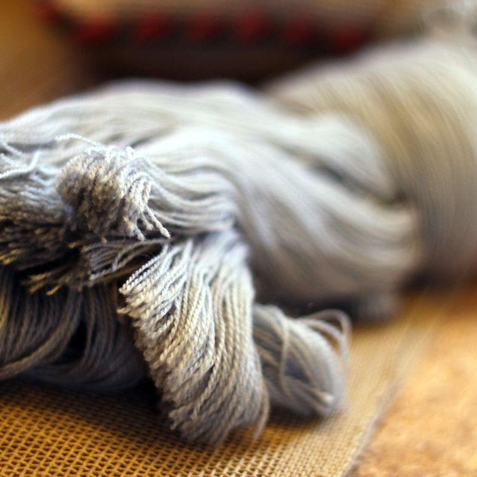
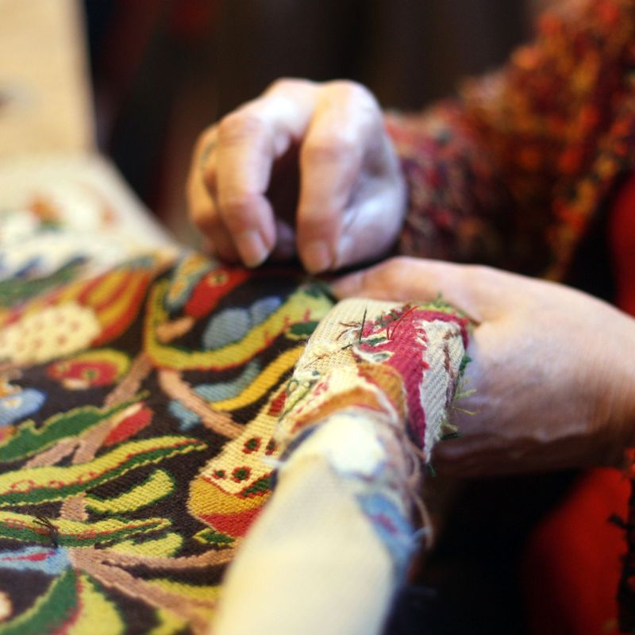
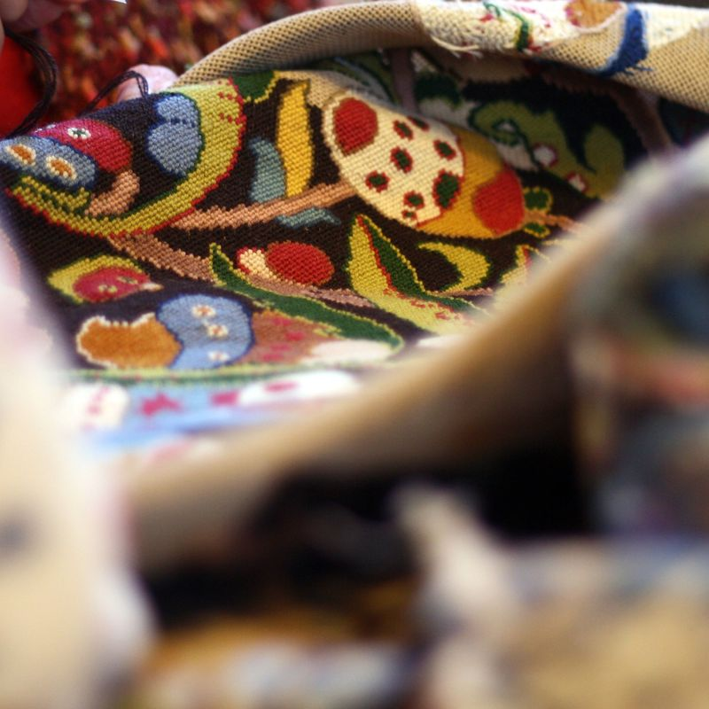

-

- 
- 
- 
-

Venez découvrir cet art ancestral qui a traversé les âges.
Vous pouvez travailler sur une reproduction de tapisserie ancienne, un modèle de fresque ou une création…
L’étape principale consiste à bien choisir le matériel nécessaire : le canevas – les fils selon leur épaisseur. Puis de fil en aiguille, de point en point, vous faites vivre le canevas avec toutes ses couleurs.
Et ceci dans une ambiance conviviale.
De septembre à juin, un mercredi tous les 15 jours de 9 h à 12 h ; selon un calendrier établi en début d’année.
L’animateur expérimenté dispense ses conseils.
Auprès de l’association ASN
Coût : 30 € par an (adhésion et location de salle)
Cours à régler directement à l’animateur : 185 € par an
REPRISE des cours le Mercredi 24 septembre 2014.